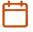
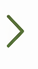
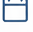

My Practice
This is where the magic happens.
Do your Daily, Weekly and Monthly KATA.
Build your consistency.

Last done: Today Weekly Practice Step back. Reflect.Learn and course-correct. Last done: 2 days ago

Monthly Practice Zoom out. Assess.Align with your bigger purpose.

Last done: 10 days ago